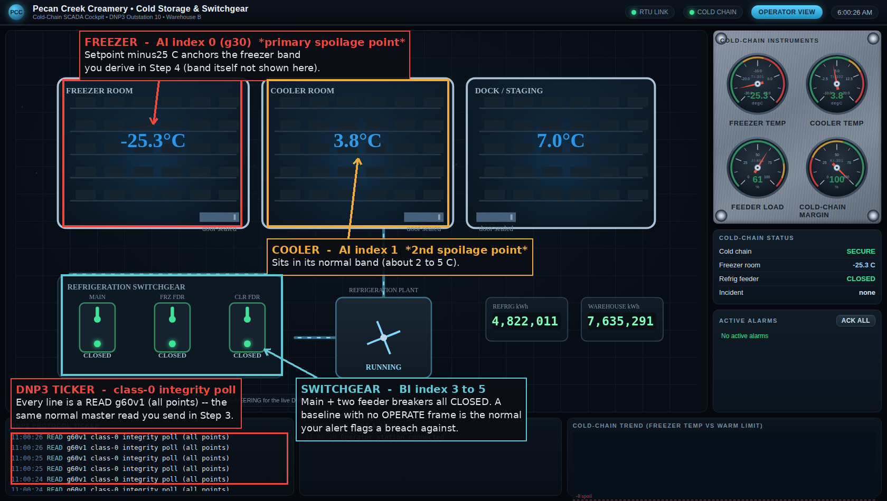
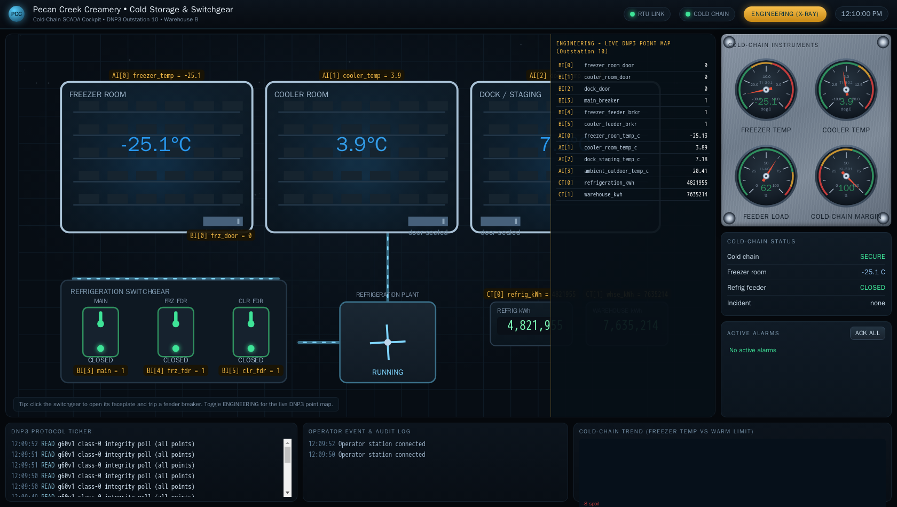
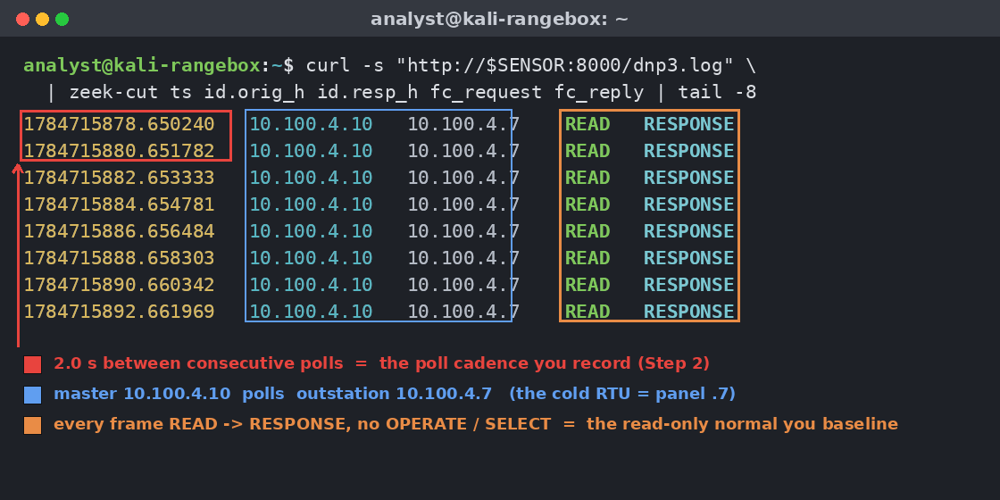
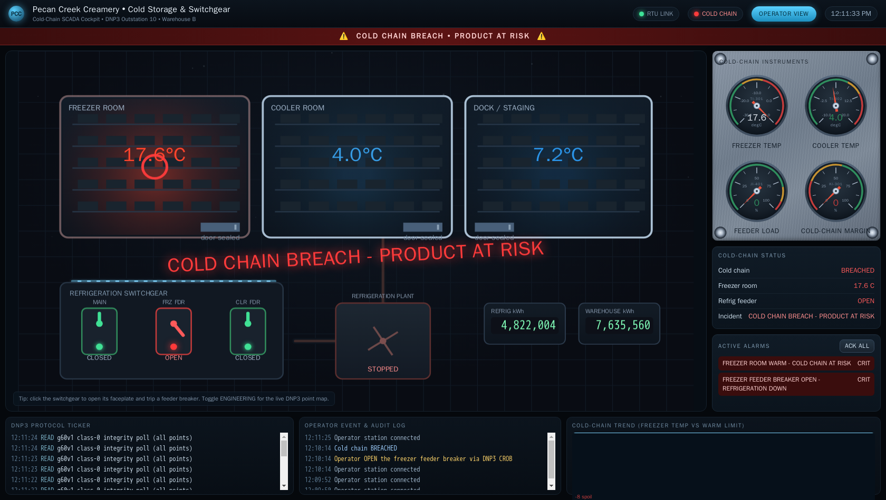

Exercise OTSOC-1.4: Baseline the Cold Chain
Scenario
Distribution at Pecan Creek Creamery wants cold-chain visibility for the warehouse. Your job in the SOC is to build a baseline of the cold-storage DNP3 RTU that another analyst could alert against. You build the baseline from normal traffic only. You do not control breakers, you do not write points, and you do not attack.
You have two data sources. The first is the passive sensor at http://sensor.pcc.local:8000/. The sensor serves Zeek logs generated from a recorded capture of the plant control network, so the hosts in those logs carry the plant's own addressing (10.100.4.x), not your session subnet. The second is the live cold-storage RTU itself, which you may poll read-only with a DNP3 class 0 integrity poll: the normal master-to-outstation read, and it is safe. A captured host lines up with its live device in your Exercise Network panel by their shared last octet, so the RTU that appears as 10.100.4.7 in the sensor logs is the same device your panel lists at its own .7 address.
The RTU at cold.pcc.local listens on TCP 20000 with outstation address 10 and master address 1. It exposes binary inputs (door and breaker states), analog inputs (room temperatures), and counters (kWh). A read-only operator account (operator / PecanCreek#2026) exists for consistency across the track; no HMI is exercised here.
Why this matters
A baseline is what turns a sensor into a detector. Without a documented normal, an alert has no threshold and an analyst has no way to say a value is wrong. In a cold chain the stakes are concrete: ice cream held above its band spoils, and spoiled product is recall, liability, and lost trust. The freezer-room temperature is the single most important number in the warehouse, so it is the point your baseline must pin down first.
DNP3 is the protocol of choice for geographically distributed assets like cold storage and switchgear, and it is built around the integrity poll: the master asks the outstation for all current values at a regular cadence. Reading that normal poll, enumerating the points, recording each range, and noting the cadence, is pure defensive groundwork. The deliverable is a baseline document another analyst could alert against. The flag comes from the freezer-room normal band, the number you must get exactly right.
| Credentials in scope | Username | Password | Where it is used |
|---|---|---|---|
| Operator account | operator |
PecanCreek#2026 |
Provided for track consistency; not exercised here |
The operator cockpit
The warehouse runs a live operator cockpit for cold storage and switchgear at hmi.pcc.local. You do not drive it in this baseline exercise, but it is the picture your DNP3 baseline describes in numbers. The cockpit reads the same cold-storage RTU you are about to poll: the three room temperatures, the freezer/cooler/dock doors, the main and two feeder breakers, and the refrigeration kWh counters. Opening it gives you a shape for the points before you enumerate them on the wire, and it labels the freezer room with its design setpoint, which anchors the band you derive later.

Flip the cockpit into its Engineering view and every element is labelled with the DNP3 point behind it, so the freezer-room temperature reads as analog index 0 (group 30) and the freezer feeder breaker reads as binary index 4 (group 1) straight off the HMI. The Engineering map is the same point list you build by hand in Step 4, one click away on the operator console.

Learning Objectives
- Issue a DNP3 class 0 integrity poll against the cold-storage RTU
- Enumerate the binary inputs, analog inputs, and counters
- Record each analog point's normal range and the poll cadence
- Identify the two spoilage-critical analog points
- Derive the flag from the freezer-room normal band
Walkthrough
Step 1: Set the host variables
Read the cold-storage RTU IP and the sensor IP from the Exercise Network panel into shell variables. The RTU is the DNP3 outstation you will poll; the sensor lets you watch the same poll mirror through dnp3.log. The panel IPs sit in your own session subnet; the sensor logs use the plant's 10.100.4.x addressing, and the two match by last octet, so the panel device ending in .7 is the 10.100.4.7 you will see in the logs.
Kali - capture the RTU and sensor IPs from the panel
Step 2: Watch the normal poll mirror through the sensor
Before you poll the RTU yourself, see what its normal traffic looks like on the wire. The sensor's dnp3.log shows the master polling the outstation at a steady cadence. Watch the timestamps: the gap between integrity polls is the poll cadence you must record in the baseline. The addresses are the capture's plant addressing, so the outstation appears as 10.100.4.7 and the polling master as 10.100.4.10.
Kali - inspect the normal DNP3 poll cadence
Expected output (the capture uses the plant control network 10.100.4.0/24)
The master at 10.100.4.10 sends a DNP3 READ to the outstation at 10.100.4.7 on a fixed interval (about two seconds between polls). Record that interval as the poll cadence. Every request is a READ and every reply is a RESPONSE; a normal cold-storage RTU baseline contains no operate or write traffic, which is itself part of what you document as normal.

Step 3: Issue your own class 0 integrity poll
Now read the live values directly. A class 0 integrity poll asks the outstation for all of its current static points in one request: binary inputs, analog inputs, and counters. The query below builds a minimal DNP3 read frame, sends it to outstation 10 from master 1 at your panel RTU (the .7 address), and prints the raw response so you can confirm the RTU answered. A class 0 poll is the normal, safe master read; it changes nothing on the device.
Kali - send a DNP3 class 0 integrity poll
python3 - <<'PY'
import os, socket, struct, time
def crc(d):
c = 0x0000
for b in d:
c ^= b
for _ in range(8):
c = (c >> 1) ^ 0xA6BC if c & 1 else c >> 1
return c ^ 0xFFFF
host = os.environ.get("COLD") # panel RTU IP ending in .7
s = socket.socket(); s.settimeout(5); s.connect((host, 20000))
# Application: transport, then READ (0x01), seq, group 60 var 1 (class 0)
app = bytes([0xC0, 0x01, 0x00, 60, 1, 0x06])
# Data-link header: sync 0x05 0x64, then length, control, dst 10, src 1
hdr = struct.pack('>H', 0x0564) + struct.pack('<BBHH', len(app) + 5, 0xC4, 10, 1)
s.sendall(hdr + struct.pack('<H', crc(hdr)) + app + struct.pack('<H', crc(app)))
time.sleep(1)
resp = s.recv(8192)
s.close()
# De-chunk the data-link frame (drop the per-16-byte block CRCs) so the
# application bytes are contiguous before you look for the marker.
length = resp[2]; total = length - 5; off = 10; app_data = b''; rem = total
while rem > 0:
cs = min(16, rem); app_data += resp[off:off + cs]; off += cs + 2; rem -= cs
print("RTU answered, %d bytes" % len(resp))
print("baseline marker present:", b'cold_chain_baseline_ok' in app_data)
PY
A non-empty response means the outstation accepted your class 0 read and returned its current static data. The poll carried every point class the RTU exposes, which is exactly what you enumerate next. The commission marker in the response confirms you are reading the genuine baseline data set.
Step 4: Enumerate the points and derive the freezer band
The class 0 poll returns three point groups. Document each one in your baseline so another analyst has a normal to alert against. The freezer-room temperature (analog group 30, index 0) is the spoilage-critical point, so you pin its band precisely: sample it across several polls, record the low and high of its observed operating range, and round each edge outward to a whole degree. Rounding outward is standard baseline practice: it sets an alert band that safely contains normal jitter without flagging every wiggle.
Kali - sample the freezer point and derive its band
python3 - <<'PY'
import os, math, socket, struct, time
def crc(d):
c = 0x0000
for b in d:
c ^= b
for _ in range(8):
c = (c >> 1) ^ 0xA6BC if c & 1 else c >> 1
return c ^ 0xFFFF
host = os.environ.get("COLD")
readings = []
for _ in range(20):
s = socket.socket(); s.settimeout(5); s.connect((host, 20000))
app = bytes([0xC0, 0x01, 0x00, 60, 1, 0x06])
hdr = struct.pack('>H', 0x0564) + struct.pack('<BBHH', len(app) + 5, 0xC4, 10, 1)
s.sendall(hdr + struct.pack('<H', crc(hdr)) + app + struct.pack('<H', crc(app)))
time.sleep(0.3)
d = s.recv(8192); s.close()
# de-chunk the data-link frame, then walk to the group 30 analog block
length = d[2]; total = length - 5; off = 10; app_data = b''; rem = total
while rem > 0:
cs = min(16, rem); app_data += d[off:off+cs]; off += cs + 2; rem -= cs
p = app_data[1:]; pos = 4 # skip transport, then FC/seq/IIN
while pos + 4 <= len(p):
g, v, _q, cnt = p[pos], p[pos+1], p[pos+2], p[pos+3]; pos += 6
if g == 1 and v == 2:
pos += 1
elif g == 30 and v == 1:
freezer = struct.unpack_from('<i', p, pos+1)[0] / 100.0
readings.append(freezer); break
else:
break
time.sleep(1.4)
lo, hi = min(readings), max(readings)
print("freezer readings: %.2f .. %.2f C over %d polls" % (lo, hi, len(readings)))
print("normal band (rounded outward): low %d C high %d C"
% (math.floor(lo), math.ceil(hi)))
PY
Expected output (values jitter; the rounded band is stable)
The freezer room holds a design setpoint of minus25 C, which you can confirm against the cockpit, and it jitters in a tight band around that setpoint. Rounding the observed low down and the observed high up gives the freezer-room normal band. Do the same enumeration for the other points and fill in your baseline table.
Cold-storage RTU baseline:
Group Point Normal range Spoilage-critical? Binary inputs (g1) freezer / cooler / dock doors closed (normal) indirect Binary inputs (g1) main + two feeder breakers closed (normal) indirect Analog (g30) index 0 freezer_room_temp_c derive in Step 4 (round outward) yes (primary) Analog (g30) index 1 cooler_room_temp_c 2.0 to 5.0 C yes (secondary) Analog (g30) index 2 dock_staging_temp_c 6.0 to 9.0 C no Analog (g30) index 3 ambient_outdoor_temp_c 18.0 to 24.0 C no Counters (g20) refrigeration + warehouse kWh monotonically climbing no Poll cadence class 0 integrity poll interval record from Step 2 n/a
The two spoilage-critical points are analog index 0 (freezer room) and analog index 1 (cooler room). The freezer-room band is the tightest and most important; a reading drifting toward its high edge or warmer is the early sign of a cold-chain failure an alert should catch.
ASCII band notation
The house rule across this platform forbids Unicode minus signs in flags and prose, because they break the PDF report generator and PowerShell parsing. When you spell a negative band edge into the flag, write it as the word minus followed by the number, so a reading of minus8 C becomes minus8, never a Unicode symbol.
Output Interpretation
- A class 0 integrity poll is the normal master read; it returns all static points and changes nothing, which is why it is the safe way to baseline an outstation
- The normal poll is all READ traffic at a fixed cadence; recording that cadence lets an analyst alert on missing polls (a dead RTU) or unexpected operate frames (tampering)
- Analog index 0 (freezer room) holds the tightest, most consequential band; a drift out of the rounded normal band is the leading indicator of spoilage
- Counters climb monotonically; a counter that resets or jumps is an anomaly worth a separate alert
Analysis Questions
1. Why is a class 0 integrity poll a safe way to baseline a DNP3 outstation?
Reveal answer
A class 0 poll is a READ for all current static points, exactly the request the master issues on its normal cycle. It does not select or operate any control point and it changes no state on the RTU. You get a complete snapshot of binary inputs, analog inputs, and counters with a request the outstation already expects every few seconds.
2. Of the four analog points, why are the freezer and cooler rooms the spoilage-critical pair?
Reveal answer
The freezer and cooler rooms hold product; the dock-staging and ambient-outdoor readings are context, not storage. A freezer drifting above its normal band threatens the most sensitive inventory first, and the cooler is the second line. Dock and ambient temperatures inform the picture but are not where spoilage is decided.
3. Your baseline records that normal traffic is all READ frames. Why is the absence of operate frames worth documenting?
Reveal answer
A documented normal of read-only polling means any DNP3 SELECT or OPERATE frame against a breaker is immediately anomalous. Recording the absence turns it into a detection rule: a lone OPERATE on a switchgear control point, against a baseline that never contains one, is a high-confidence tamper signal.
The breaker tamper your baseline is meant to catch is not hypothetical. A single DNP3 CROB that latches the freezer feeder open drops refrigeration and walks the freezer room straight out of the normal band you recorded. The cockpit below shows the result the baseline exists to flag.

Capture the Flag
You derive the flag from the freezer-room normal band you established in Step 4. Take the observed low and high of the freezer readings, round the low down and the high up to whole degrees, and you have the two band edges. Because the platform bans Unicode minus signs, spell each negative edge in plain ASCII as the word minus followed by the number. Assemble the low edge and the high edge into the masked form below.
Flag format:
OCR{freezer_band_minus..._minus...}
Take the freezer-room low and high band edges you derived, spell them as ASCII words, and assemble the flag. Submit it in the OCR platform.